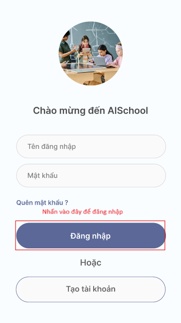
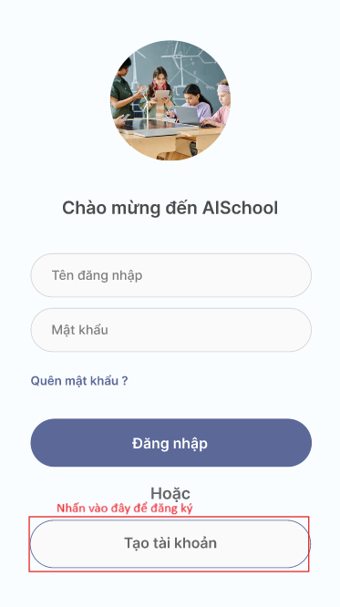
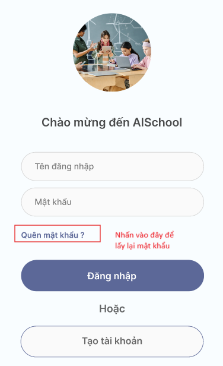
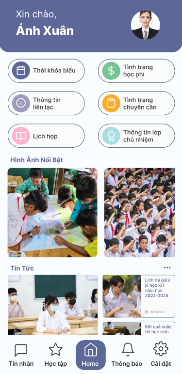
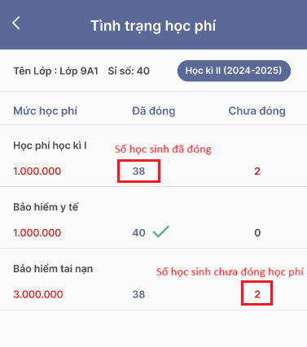
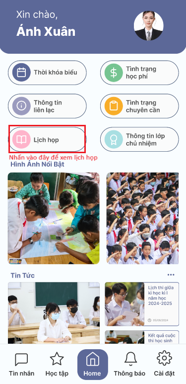
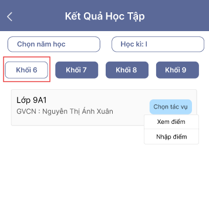
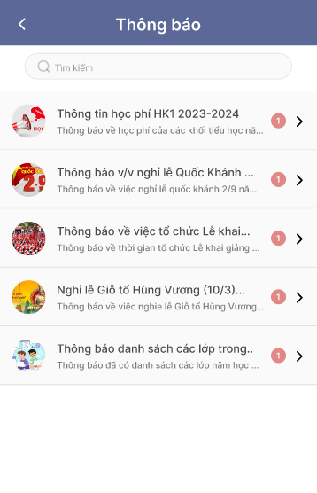
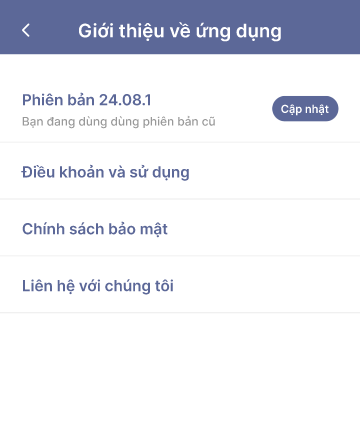
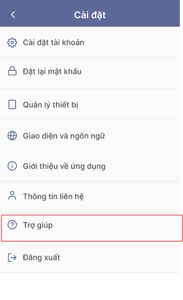

Mục lục
- Tải ứng dụng
-
Dành Cho Giáo Viên
- Hướng dẫn đăng nhập
- Hướng dẫn đăng ký
-
Hướng dẫn lấy lại mật khẩu
khi quên mật khẩu - Giới thiệu Trang chủ
-
Hướng dẫn sử dụng chức năng
"Thời khóa biểu" -
Hướng dẫn sử dụng chức năng
"Tình trạng học phí" -
Hướng dẫn sử dụng chức năng
"Thông tin liên lạc" -
Hướng dẫn sử dụng chức năng
"Tình trạng chuyên cần" -
Hướng dẫn sử dụng chức năng
"Lịch họp" -
Hướng dẫn sử dụng chức năng
"Thông tin lớp chủ nhiệm" -
Hướng dẫn sử dụng chức năng
"Tin nhắn" -
Hướng dẫn sử dụng chức năng
"Học tập" -
Hướng dẫn sử dụng chức năng
"Thông báo" -
Hướng dẫn sử dụng chức năng
"Cài đặt"
Kết luận
Hướng dẫn sử dụng App AISchool trên thiết bị di động
I. Tải Ứng Dụng
-
Link tải cho Androi:
-
Link tải cho IOS:
II. Dành Cho Giáo Viên
-
1. Hướng dẫn đăng nhập
Bước 1: Mở ứng dụng AISchool trên thiết bị di động.
Bước 2: Trên màn hình chào mừng, tìm ô nhập liệu có nhãn “Tên đăng nhập” và nhập tên đăng nhập.
Bước 3: Tìm ô nhập liệu có nhãn “Mật khẩu” và nhập mật khẩu.
Bước 4: Sau khi điền đầy đủ thông tin, nhấn vào nút màu xanh “Đăng nhập” để truy cập vào tài khoản.
 -
2. Hướng dẫn đăng ký
Bước 1: Mở ứng dụng AISchool trên thiết bị di động.
Bước 2: Chọn “Tạo tài khoản” để đăng ký tài khoản mới.
Bước 3: Chọn vai trò là Giáo viên.
Bước 4: Điền đầy đủ thông tin, nhấn vào nút màu xanh “Tiếp theo” để tiếp tục quá trình đăng ký.
Bước 5: Nhập mật khẩu và xác nhận mật khẩu, sau đó nhấn vào nút màu xanh “Đăng ký” để hoàn tất quá trình đăng ký và chờ xét duyệt.

-
3. Hướng dẫn lấy lại mật khẩu khi quên mật khẩu
Bước 1: Nếu quên mật khẩu, hãy nhấp vào liên kết “Quên mật khẩu?” để đặt lại mật khẩu.
Bước 2: Nhập số tài khoản đã đăng ký để lấy lại mật khẩu

Bước 3: Nhập mật khẩu mới và xác nhận mật khẩu mới, nhấn vào nút màu xanh "Đổi mật khẩu" để đổi mật khẩu mới

Bước 4: Sau khi đổi mật khẩu mới thành công tiến hành đăng nhập lại
-
4. Trang chủ
Trang chủ gồm các chức năng cơ bản như : Thời khóa biểu, Thông tin chuyên cần, Lịch họp, đối với giáo viên chủ nhiệm có thêm hai chức năng Tình trạng học phí và Thông tin lớp chủ nhiệm. Trong trang chủ còn có các Hình ảnh nổi bật của trường, Tin tức, Diễn đàn, Hoạt động ngoại khóa
 -
5. Hướng dẫn sử dụng chức năng "Thời khóa biểu"
Chức năng Thời khóa biểu cung cấp thông tin đầy đủ về lịch dạy, lịch coi thi của giáo viên trong tuần
Truy cập vào trang chủ nhấn chọn chức năng "Thời khóa biểu"
Chọn vào biểu tượng dấu chấm tròn trước "Tất cả" để xem tất cả các lịch dạy lý thuyết, thực hành, lịch online, lịch tạm ngưng, lịch coi thi trong tuần
Chọn vào biểu tượng dấu chấm tròn trước "Lịch dạy" để xem tất cả các lịch dạy trong tuần
Chọn vào biểu tượng dấu chấm tròn trước "Lịch coi thi" để xem tất cả các lịch coi thi trong tuần
Trong chức năng thời khóa biểu có thể chọn ngày để xem lịch dạy của tuần có ngày đó, ngoài ra có thể chọn "Hiện tại" để xem lịch của tuần hiện tại , chọn "Tiếp" để xem lịch của tuần sau , chọn "Trở về" để xem lịch của tuần trước.
-
6. Hướng dẫn sử dụng chức năng "Tình trạng học phí"
Chức năng Tình trạng học phí cung cấp thông tin về số học sinh đã đóng học phí, số học sinh chưa đóng học phí và tình trạng của mỗi học sinh để giáo viên chủ nhiệm có thể nắm bắt và hỗ trợ kịp thời, đồng thời tại đây giáo viên cũng có thể liên hệ trực tiếp với học sinh
Truy cập vào trang chủ nhấn chọn chức năng "Tình trạng học phí"
Màn hình hiển thị đầy đủ các thông tin về tình trạng đóng và chưa đóng học phí của lớp mà giáo viên đó chủ nhiệm
Nhấn chọn vào biểu tượng số học sinh đã đóng học phí để xem danh sách các học sinh đã hoàn thành việc đóng học phí
Nhấn chọn vào biểu tượng số học sinh chưa đóng học phí để xem danh sách các học sinh chưa hoàn thành việc đóng học phí
Nhấn vào ảnh đại diện của học sinh sẽ hiển thị thông tin phụ huynh huynh cuả học sinh đó, tại đây giáo viên có thể liên hệ và trao đổi trực tiếp với phụ huynh để hỗ trợ
-
7. Hướng dẫn sử dụng chức năng "Thông tin liên lạc"
Chức năng Thông tin liên lạc cung cấp thông tin về các giáo viên cùng bộ môn, các giáo viên dạy cùng lớp, giáo viên chủ nhiệm của các lớp đang dạy, thông tin về phụ huynh để giáo viên có thể liên hệ trực tiếp và trao đổi
Truy cập vào trang chủ nhấn chọn chức năng "Thông tin liên lạc"
Màn hình sẽ hiển thị lớp chủ nhiệm (nếu giáo viên có chủ nhiệm) và các lớp mà giáo viên này có tham gia giảng dạy, nhấn "Chi tiết" để xem thông tin
Màn hình hiển thị danh sách các giáo viên và thông tin liên hệ của họ
Màn hình hiển thị danh sách các phụ huynh và thông tin liên hệ của họ
Tại màn hình danh sách phụ huynh nhấn vào "Chi tiết" để xem thông tin về các con của phụ huynh hiện đang học tai trường
-
8. Hướng dẫn sử dụng chức năng "Tình trạng chuyên cần"
Chức năng Tình trạng chuyên cần cung cấp thông tin điểm danh và tình trạng của học sinh tại các lớp mà giáo viên đó đang chủ nhiệm (nếu có) và các lớp đang giảng dạy
Truy cập vào trang chủ nhấn chọn chức năng "Tình trạng chuyên cần"
Màn hình sẽ hiển thị danh sách của lớp chủ nhiệm (nếu giáo viên có chủ nhiệm) và các lớp mà giáo viên này có tham gia giảng dạy
Chọn "Hiện diện" để xem số học sinh đang hiện diện trong lớp
Chọn "Vắng" để xem số học sinh vắng mặt
Chọn "Trễ" để xem số học sinh đến lớp trễ
Nhấn vào nút "Trạng thái" sẽ hiển thị một form để cập nhật trạng thái đến lớp của học sinh và gửi về cho phụ huynh
Có thể chọn nhiều học sinh và gửi cho nhiều phụ huynh cùng lúc
Nhấn vào ảnh đại diện của học sinh có thể xem được thống kê điểm danh của học sinh đó trong một khoản thời gian
-
9. Hướng dẫn sử dụng chức năng "Lịch họp"
Chức năng Lịch họp cung cấp thông tin Lịch họp của trường và Lịch họp của tôi cho phép giáo viên theo dõi thông tin, nhận thông báo các lịch họp, chủ động trong chuẩn bị và sắp xếp thời gian
Truy cập vào trang chủ nhấn chọn chức năng "Lịch họp"
Màn hình sẽ hiển thị danh sách Lịch họp của trường trong ngày các cuộc họp quan trọng sẽ được tô màu đỏ và các cuộc họp đã qua sẽ được tô màu xám, những cuộc họp bình thường sẽ hiển thị màu xanh
Chọn "Lịch họp của tôi" để xem các lịch họp cá nhân, tại đây Giáo viên có thể tự tạo các lịch họp cá nhân và gửi thông báo tới những người sẽ tham gia cuộc họp
Chọn dấu "+" để tạo cuộc họp
-
10. Hướng dẫn sử dụng chức năng "Thông tin lớp chủ nhiệm"
Chức năng Thông tin lớp chủ nhiệm (dành cho giáo viên chủ nhiệm) cung cấp thông tin về kết quả học tập và thống kê điểm danh của lớp chủ nhiệm
Truy cập vào trang chủ nhấn chọn chức năng "Thông tin lớp chủ nhiệm"
Màn hình hiển thị thông tin Thống kê kết quả học tập, tại đây Giáo viên có thể xem thống kê kết quả học tập của lớp chủ nhiệm, thống kê số học sinh giỏi, khá, trung bình, yếu. Tại đây Giáo viên có thể liên hệ với học sinh và tạo các ghi chú
Nhấn vào ảnh đại diện để hiển thị thông tin của học sinh
Chọn "Thống kê điểm danh" để xem thông tin điểm danh của lớp chủ nhiệm, số học sinh đang hiện diện, vắng, trễ. Có thể chọn xem thống kê theo ngày, theo tuần
-
11. Hướng dẫn sử dụng chức năng "Tin nhắn"
Chức năng Nhắn tin cho phép Giáo viên có thể liên lạc riêng với phụ huynh, học sinh, có thể gọi điện và nhắn tin
Chọn chức năng "Chat" trong trang chủ
Nhấn chọn vào giao diện đoạn chat để đi đến phần nhắn tin

Tại đây Giáo viên có thể trò chuyện, gọi thường(nhấn vào biểu tượng cuộc gọi), hoặc gọi video và gửi file ảnh cho người đang chat

Giao diện gọi điện

Chuyển sang video bằng cách nhấn vào biểu tượng video trong phần gọi điện

Nhấn chọn vào Nhóm chat để đi đến phần nhắn tin theo nhóm, tại đây có nhóm chung cho lớp, nhóm cho bộ môn,...

Tại đây Giáo viên có thể trò chuyện, gọi thường(nhấn vào biểu tượng cuộc gọi), hoặc gọi video và gửi file ảnh cho nhiều người đang có trong nhóm

Giao diện gọi điện nhóm

-
12. Hướng dẫn sử dụng chức năng "Học tập"
Chức năng Học tập cung cấp thông tin học tập của học sinh, cho phép giáo viên nhập điểm, xem điểm
Chọn chức năng Học tập trong giao diện trang chủ
Trên giao diện, Giáo viên sẽ thấy một tùy chọn để chọn năm học. Nhấp vào đây và chọn năm học mà Giáo viên muốn xem kết quả. Tiếp theo, chọn học kỳ mà Giáo viên muốn xem kết quả
Giáo viên sẽ thấy các nút chọn khối. Nhấp vào khối lớp mà Giáo viên muốn xem kết quả, sau khi chọn khối lớp, Giáo viên sẽ thấy danh sách các lớp cụ thể. Nhấn vào "Chi tiết" sẽ hiển thị hai lựa chọn : Xem điểm: Nhấp vào đây để xem kết quả học tập của học sinh trong lớp. Nhập điểm: Nhấp vào đây để nhập điểm cho học sinh.
Nhấn vào "Xem điểm" sẽ hiển thị danh sách học sinh, nhấn vào ảnh đại diện của học sinh để xem điểm của học sinh đó. Tại đây giáo viên có thể nhập điểm cho môn học mà mình giảng dạy, thêm ảnh minh chứng điểm cho bài kiểm tra,..
Nhấn vào để thêm điểm
Form điểm và thêm minh chứng
Nhấn vào "Nhập" điểm sẽ hiển thị nút "Tải dữ liệu lên" để nhập vào file điểm, hệ thống sẽ tự tính toán điểm tổng kết và xếp loại.
-
13. Hướng dẫn sử dụng chức năng "Thông báo"
Chức năng xem thông báo giúp Giáo viên cập nhật nhanh chóng các thông tin quan trọng từ nhà trường .
Tại giao diện trang chủ Chọn chức năng "Thông báo" .
Trong mục Thông báo, Giáo viên sẽ thấy danh sách các thông báo mới nhất.
Nhấp vào từng thông báo để xem chi tiết.

-
14. Hướng dẫn sử dụng chức năng "Cài đặt"
Chức năng Cài đặt giúp Giáo viên tùy chỉnh và quản lý tài khoản của mình một cách hiệu quả, đồng thời giúp Giáo viên liên hệ với nhà phát triển và nhận được các trợ giúp kịp thời trong quá trình sử dụng ứng dụng.
Tại giao diện trang chủ chọn chức năng "Cài đặt", trong đó có các chức năng như: Cài đặt tài khoản, Đặt lại mật khẩu, Quản lý thiết bị, Giao diện và ngôn ngữ, Giới thiệu về ứng dụng, Thông tin liên hệ, Trợ giúp, Đăng xuất.
Chức năng "Cài đặt tài khoản" : Giúp quản lý thông tin tài khoản của Giáo viên như tên, email, và số điện thoại.
Cách sử dụng: Nhấp vào “Cài đặt tài khoản”, sau đó màn hình sẽ hiển thị thông tin tài khoản của Giáo viên.
Giáo viên có thể thay đổi một số thông tin bằng cách nhấn vào biểu tượng cây bút để chỉnh sửa các thông tin cần thiết và lưu lại.
Chức năng "Đặt lại mật khẩu" : Giúp thay đổi mật khẩu hiện tại của Giáo viên nâng cao tính bảo mật của tài khoản.
Cách sử dụng: Nhấp vào “Đặt lại mật khẩu”, màn hình sẽ hiển thị các ô input để nhập mật khẩu mới
Giáo viên cần nhập mật khẩu hiện tại, sau đó nhập mật khẩu mới, xác nhận mật khẩu mới và nhấn nút "Cập nhật" để cập nhật lại mật khẩu

Chức năng "Quản lý thiết bị" : Giúp Giáo viên quản lý các thiết bị đã đăng nhập vào tài khoản của Giáo viên.
Cách sử dụng: Nhấp vào “Quản lý thiết bị” để xem danh sách các thiết bị và đăng xuất khỏi các thiết bị không sử dụng
Màn hình hiển thị danh sách các thiết bị đã đăng nhập, Giáo viên có thể xem thông tin về thiết bị khi nhấn vào dấu "..."

Thông tin về thiết bị đã đăng nhập

Chức năng "Giao diện và ngôn ngữ" : Giúp thay đổi giao diện và ngôn ngữ của ứng dụng.
Cách sử dụng: Nhấp vào “Giao diện và ngôn ngữ” .
Chọn giao diện và ngôn ngữ mong muốn, sau đó lưu lại.

Chức năng "Giới thiệu về ứng dụng" : Giúp Giáo viên xem thông tin về phiên bản và nhà phát triển của ứng dụng
Cách sử dụng: Nhấp vào “Giới thiệu về ứng dụng” để xem các thông tin chi tiết.
Tại đây Giáo viên cũng có thể cập nhật phiên bản mới nhất của ứng dụng nhi bấm vào nút "Cập nhật"
Chức năng "Thông tin liên hệ" : Cung cấp thông tin của nhà phát triển và thông tin liên hệ của trường học
Cách sử dụng: Nhấp vào "Thông tin liên hệ" để xem các thông tin cần thiết
Thông tin của nhà phát triển

Thông tin của trường

Chức năng "Trợ giúp" : Giúp Giáo viên có thể truy cập vào các tài liệu hướng dẫn và hỗ trợ.

Cách sử dụng: Nhấp vào “Trợ giúp” để xem các tài liệu và liên hệ hỗ trợ nếu cần.Trong chức năng "Trợ giúp có đường link hướng dẫn sử dụng chi tiết mà Giáo viên có thể tham khảo"

Chức năng "Đăng xuất" : Giúp Giáo viên đăng xuất tài khoản khỏi ứng dụng.
Cách sử dụng: Nhấp vào “Đăng xuất” để thoát khỏi ứng dụng.
VI. Kết luận
AISCHOOL là giải pháp toàn diện cho việc quản lý trường học, mang lại sự tiện lợi và hiệu quả cho cả giáo viên, học sinh và nhà quản lý. Với các tính năng tiên tiến như quản lý thông tin học sinh, theo dõi tiến độ học tập, quản lý thời khóa biểu và nhiều hơn nữa, AISCHOOL giúp tối ưu hóa quy trình quản lý và nâng cao chất lượng giáo dục. Ứng dụng không chỉ giúp giảm bớt gánh nặng công việc hành chính mà còn tạo điều kiện thuận lợi cho việc ra quyết định dựa trên dữ liệu. Với giao diện thân thiện và dễ sử dụng, AISCHOOL là công cụ không thể thiếu cho mọi trường học hiện đại. Hãy trải nghiệm AISCHOOL ngay hôm nay để thấy sự khác biệt và cùng chúng tôi xây dựng một môi trường giáo dục thông minh và hiệu quả hơn.